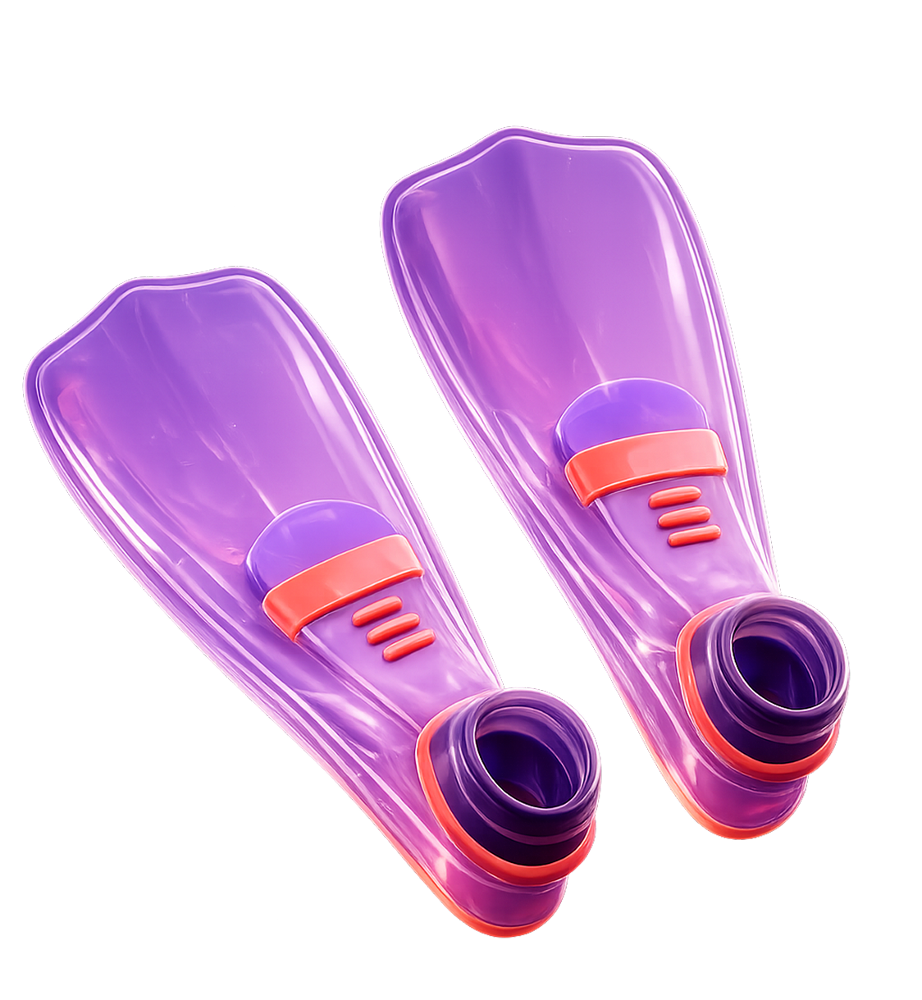
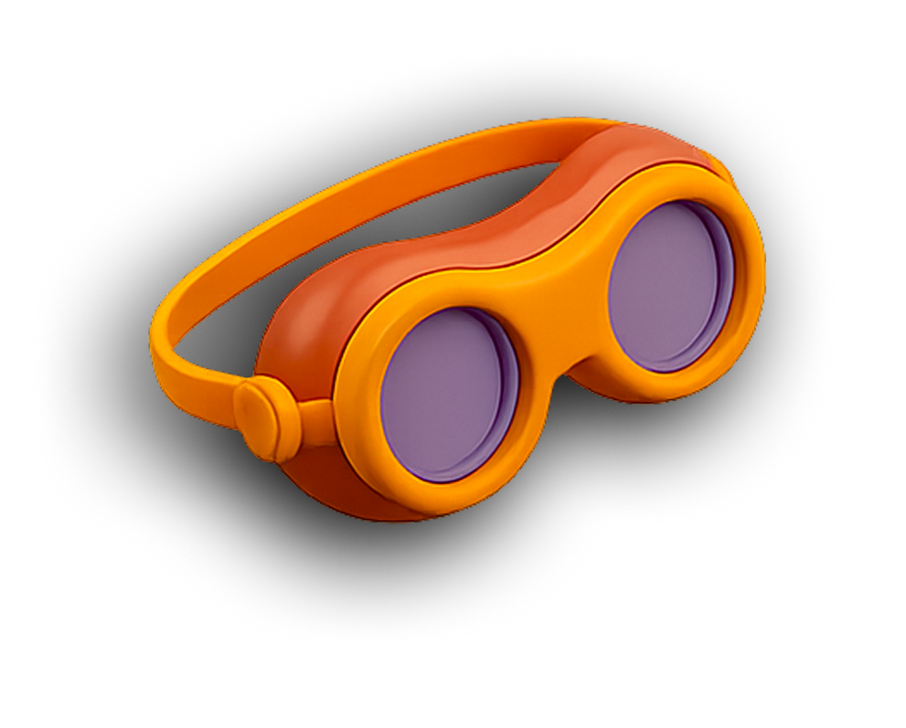
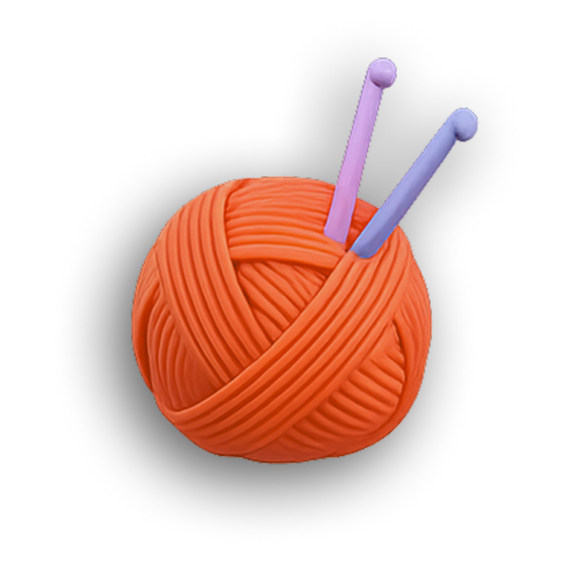
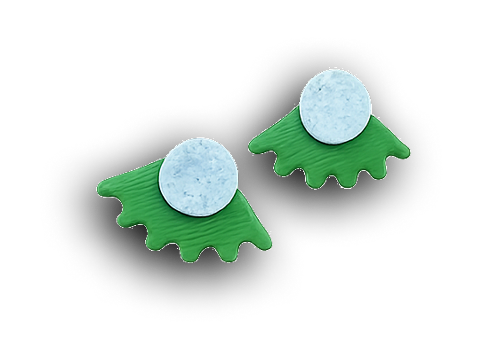
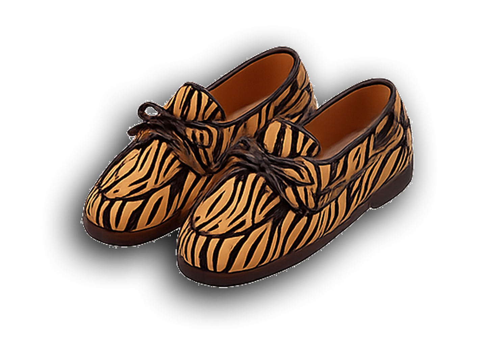

Hey, I'm Lior! 👋
I'm a product designer with 12 years of experience across product, web design and marketing. What drives me is solving complex problems and building products that make people's lives a little easier.
When I'm not designing, I'm probably crocheting something (clothes, dolls, you name it), making jewellery, swimming, or just... making things. I just really love making things, diving into new projects, and picking up new skills along the way.




